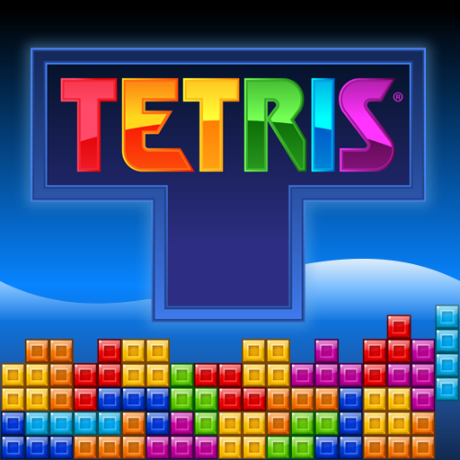
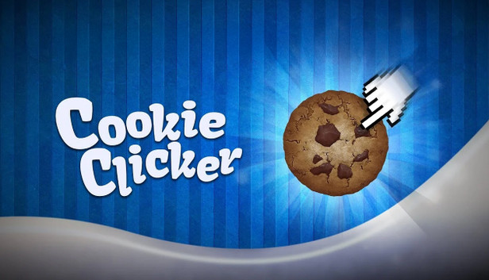

These games generally feature straightforward mechanics that are easy to pick up but scale dramatically in complexity. They often lack a narrative or intense time pressure.
Their Focus: Logic, pattern recognition, and accessibility.
Some exaples of the genres:
- Logic Puzzles: Games focused purely on spatial reasoning, geometry, or matching patterns.

- Idle / Incremental Games: Games that require minimal interaction, often progressing and accumulating resources automatically even when you aren't actively playing.

Take me back